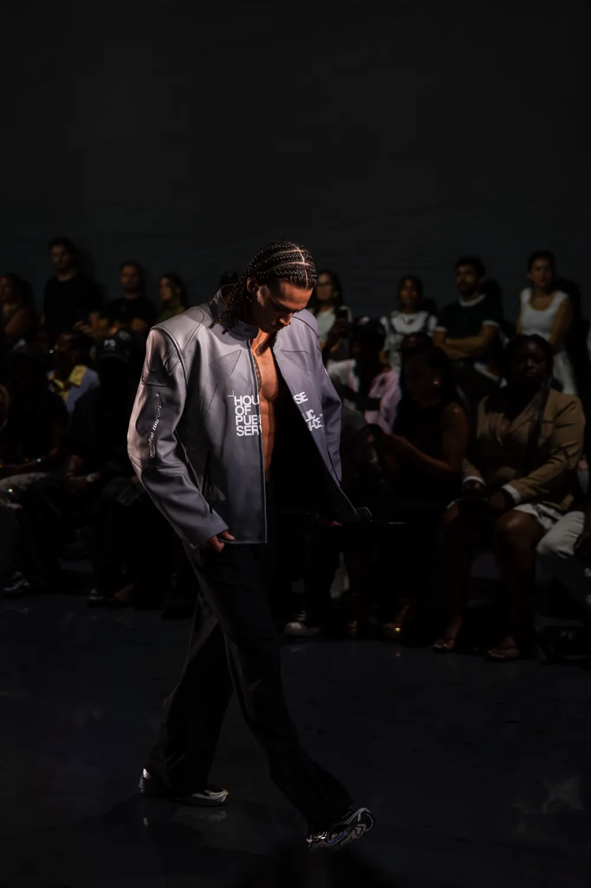
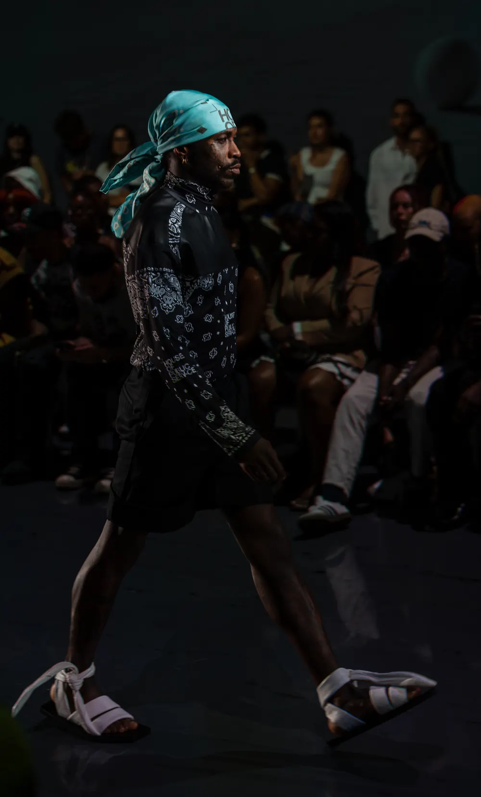
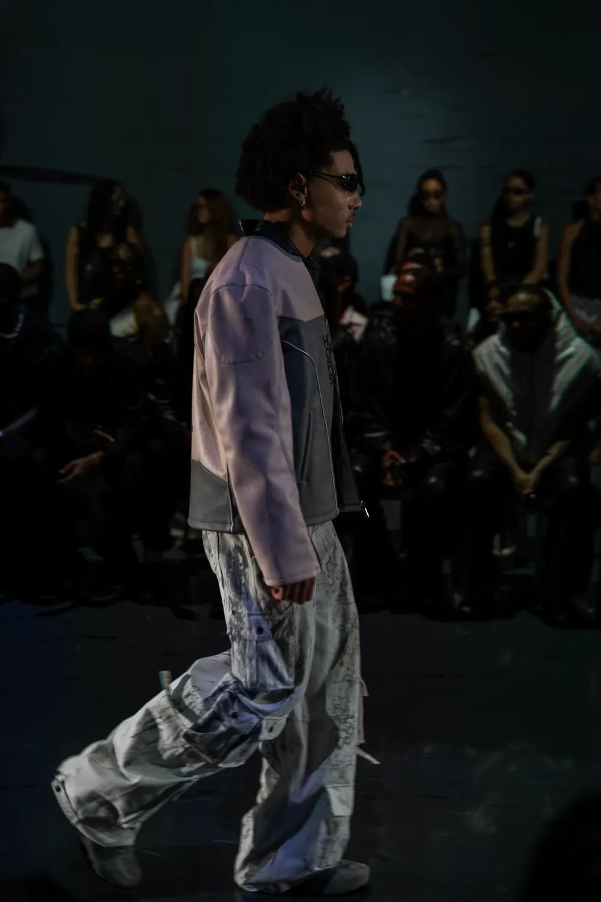
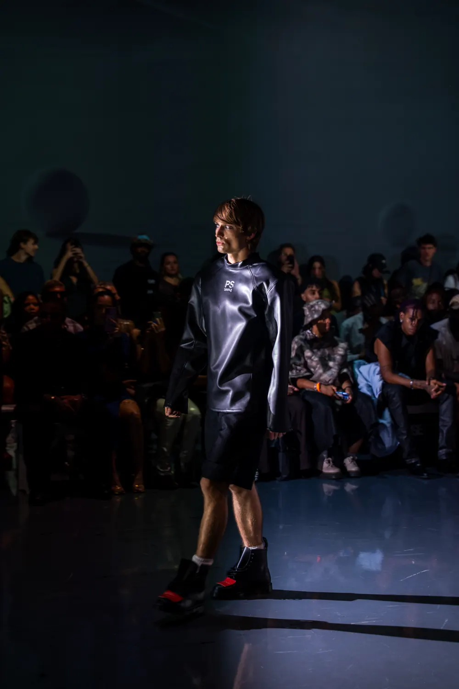

ROMAIN
MAULAVÉ
Saisons
Maisons
Contact
EN
|
FR
Saisons
Maisons
Contact
EN
|
FR
Dernière saison · New York Fashion Week · SS27
BETWEEN
THE
LIGHTS.
Voir la saison
Me contacter
Scroll
Dernière saison
New York · Septembre 2026
New York Fashion Week
SS27
PUBLIC SERV-CE
Voir la saison →




Archives
Saisons
New York
New York Fashion Week
SS27
Septembre 2026
New York
New York Fashion Week
FW25
Février 2025
Défilés photographiés
Maisons
FILIPINXT
FW25 · New York
Global Fashion Collective
Kehang
FW25 · New York
PUBLIC SERV-CE
Raphael Young
SS27 · New York